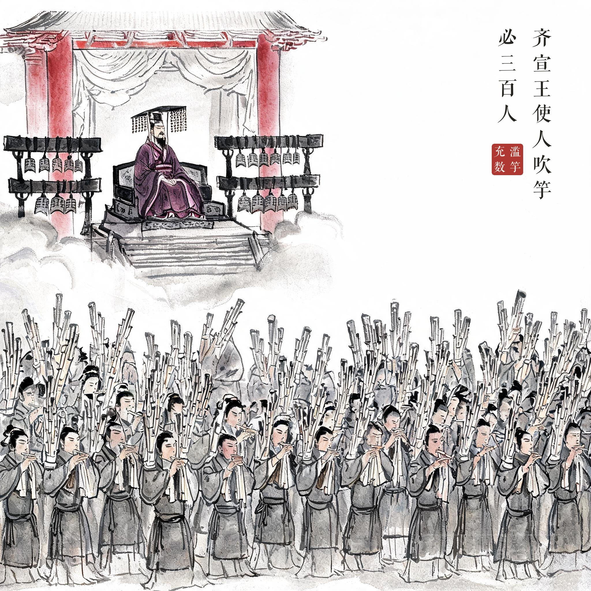
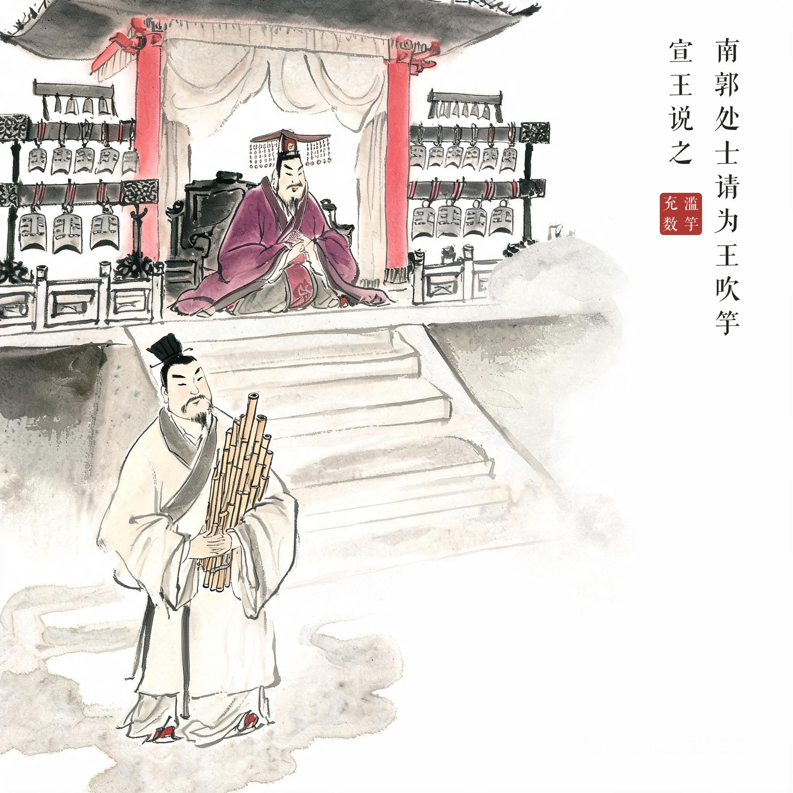
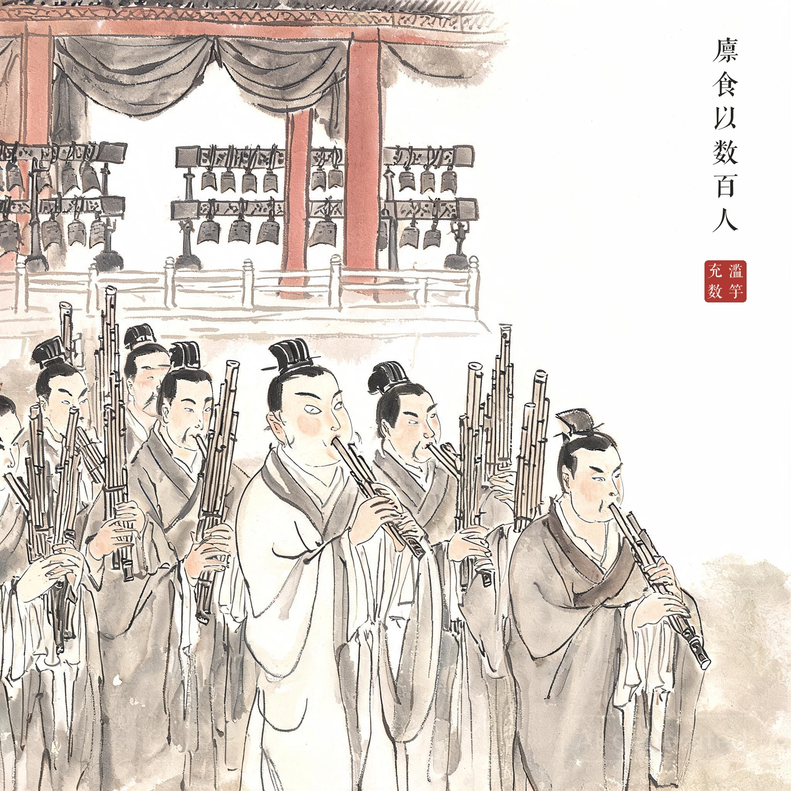
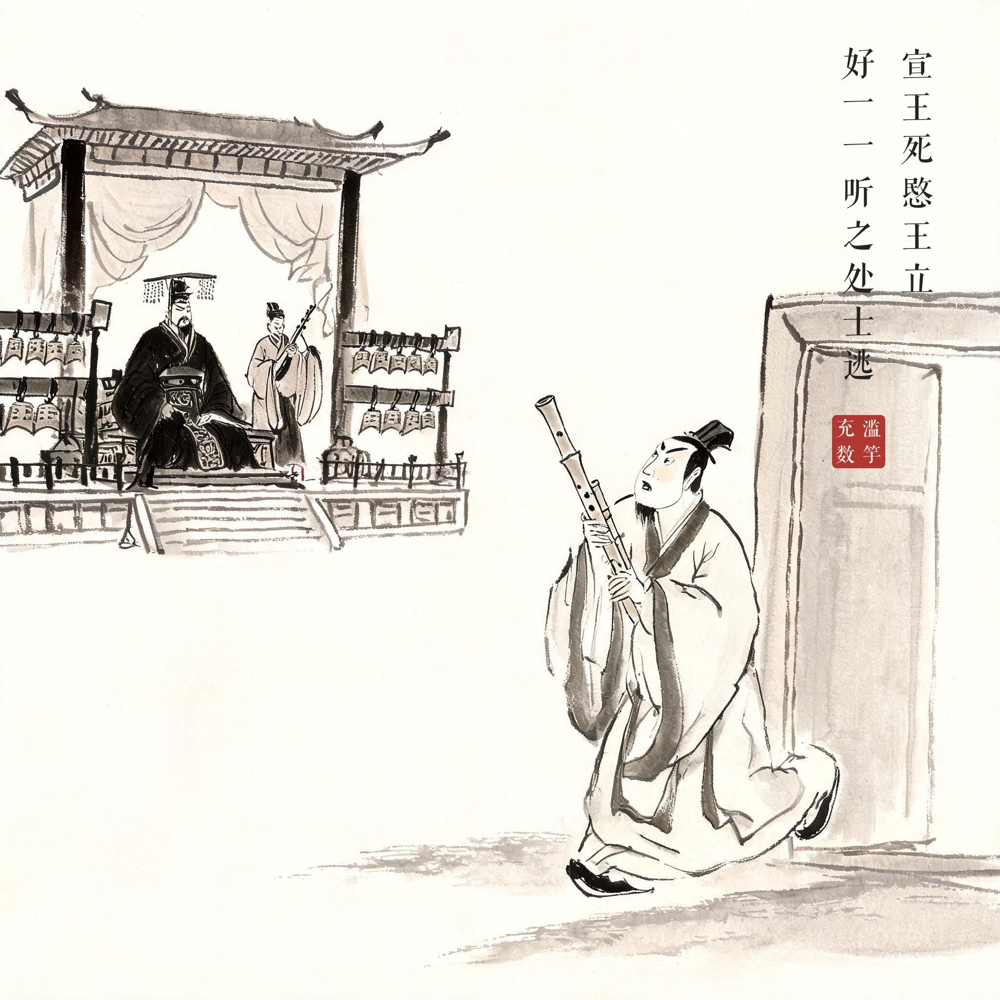

《韩非子 · 内储说上》
齐宣王使人吹竽，必三百人。南郭处士请为王吹竽，宣王说之，廪食以数百人。宣王死，湣王立，好一一听之，处士逃。
齐宣王让人吹竽给他听，一定要三百人合奏。南郭处士请求加入吹竽队伍，宣王很高兴，按几百人的标准供他粮饷。宣王死后湣王即位，却喜欢听乐工一个一个独奏，南郭处士（不会吹竽）只好逃走了。
没有真才实学的人混在行家里面充数，或以次货冒充好货，终究骗不了一世；一旦要求"一一听之"，原形毕露。